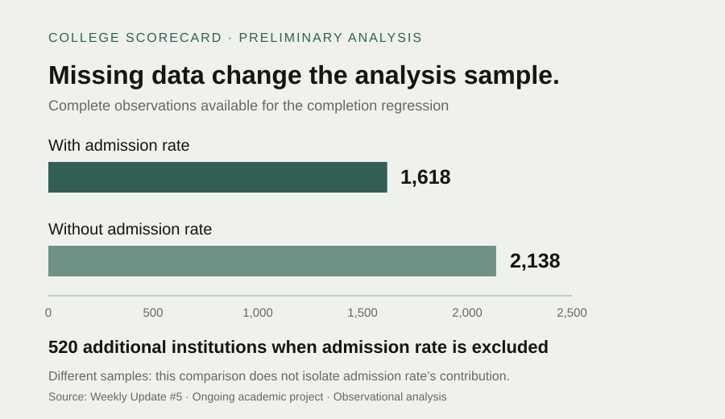
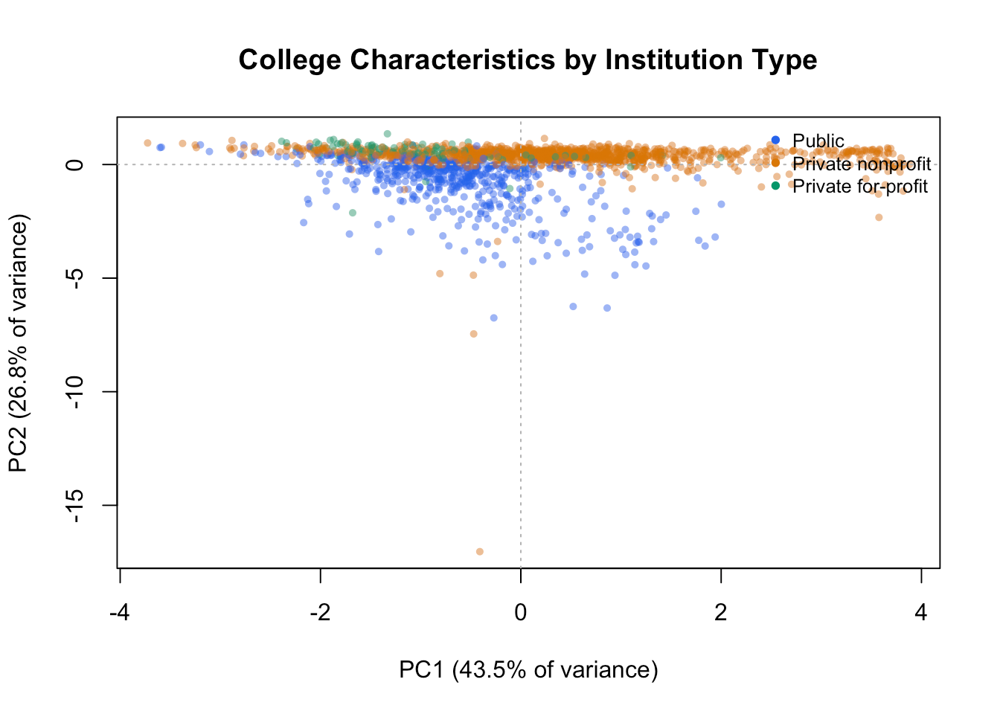

- completion-model institutions
- 1,618
- institutions in the broader comparison
- +520
- PCA variance in the first two components
- 70.3%
The question
How do cost, financial aid, selectivity, enrollment, and institution type relate to college completion and earnings?
My work
Prepared institution-level College Scorecard data, assessed missingness, estimated completion and earnings regressions, compared completion samples with and without admission rate, applied 10-fold cross-validated Lasso, and performed standardized PCA.
Data and sample
The source contains 6,273 institution records. Suppressed and non-numeric entries were treated as missing. Complete-case counts vary: 1,618 for the completion model, 2,138 for the model excluding admission rate, 1,949 for earnings, and 1,727 for PCA. Admission rate was missing for 69.6% of the source.
Findings and evidence
Cost of attendance was positively associated with completion and earnings; Pell Grant participation was negatively associated with both, conditional on the other included predictors. Completion R² was 0.4834 and earnings R² was 0.5053. These describe in-sample fit, not held-out prediction.

Open full size ↗Adjusted completion R² was 0.4815 with admission rate and 0.4082 without it. Lasso retained all predictor terms at the minimum-error penalty. In PCA, PC1 contrasted cost with admission rates and Pell participation; PC2 was dominated by enrollment. Institution types overlap in the plot.

Open full size ↗Interpretation and next steps
These are institution-level associations, not causal effects or estimates for individual students. Missing data limit generalization. A useful comparison needs both sample coverage and predictive evaluation. Planned work includes comparing Random Forest, linear regression, and Lasso on a common sample and evaluation procedure, followed by a dashboard.
Results documented in my Weekly Updates #5 and #6. This project is ongoing; the source repository is private.